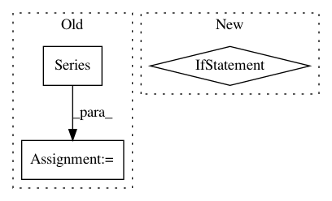

e3d8cb47bdcf01e991739905a5d6391aafd693a6,neurokit/bio/bio_ecg.py,,ecg_process,#,25
Before Change
// Complexity
processed_ecg["ECG"]["Complexity"] = {}
chaos = complexity(rri, lyap_r=False, lyap_e=False, emb_dim=2, k_max=8)
chaos = pd.Series(chaos)
chaos.index = ["ECG_Complexity_" + s for s in chaos.index]
processed_ecg["ECG"]["Complexity"] = chaos.to_dict()
return(processed_ecg)
After Change
// HRV
hrv = ecg_hrv(rri, sampling_rate, segment_length=hrv_segment_length)
if age is not None and sex is not None and position is not None:
hrv_adjusted = ecg_hrv_assessment(hrv, age, sex, position)
// Waves
waves = ecg_wave_detector(ecg_df["ECG_Filtered"], biosppy_ecg["rpeaks"])
// Systole
ecg_df["ECG_Systole"] = ecg_systole(ecg_df["ECG_Filtered"], biosppy_ecg["rpeaks"], waves["T_Waves"])
In pattern: SUPERPATTERN
Frequency: 4
Non-data size: 3
Instances
Project Name: neuropsychology/NeuroKit.py
Commit Name: e3d8cb47bdcf01e991739905a5d6391aafd693a6
Time: 2017-05-26
Author: dom.mak19@gmail.com
File Name: neurokit/bio/bio_ecg.py
Class Name:
Method Name: ecg_process
Project Name: scikit-learn-contrib/categorical-encoding
Commit Name: 970491cd9b3cb21b043c22b50b4d09f9dd2481a7
Time: 2018-10-19
Author: jan@motl.us
File Name: category_encoders/woe.py
Class Name: WOEEncoder
Method Name: _score
Project Name: DistrictDataLabs/yellowbrick
Commit Name: eb9f8cce1d00417520f3282807ae99c40801346d
Time: 2019-05-14
Author: 8103276+zjpoh@users.noreply.github.com
File Name: tests/test_features/test_pcoords.py
Class Name: TestParallelCoordinates
Method Name: test_pandas_integration_sampled
Project Name: DistrictDataLabs/yellowbrick
Commit Name: eb9f8cce1d00417520f3282807ae99c40801346d
Time: 2019-05-14
Author: 8103276+zjpoh@users.noreply.github.com
File Name: tests/test_features/test_pcoords.py
Class Name: TestParallelCoordinates
Method Name: test_pandas_integration_fast